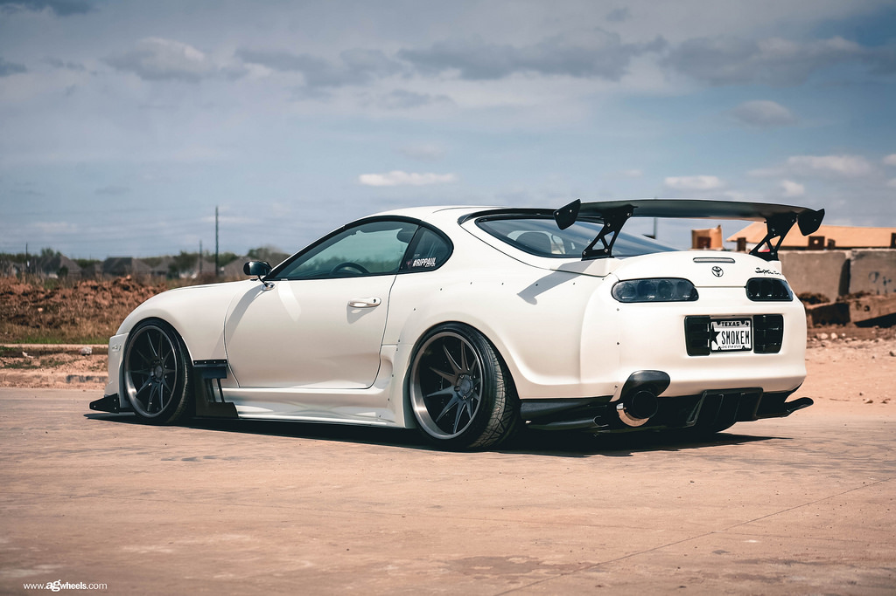
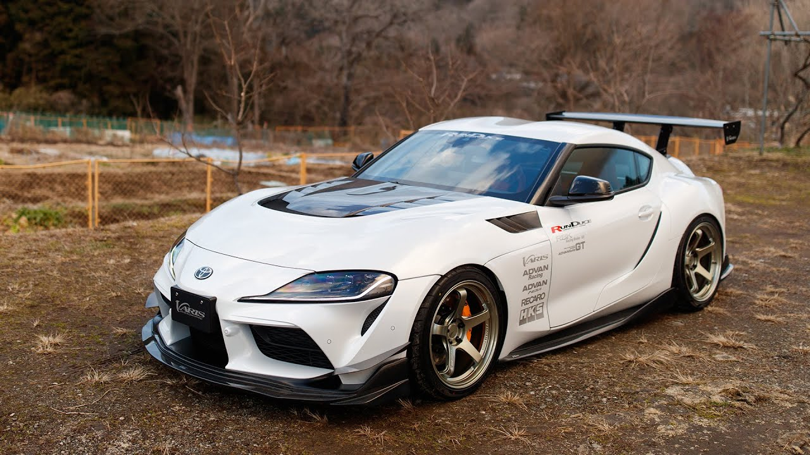
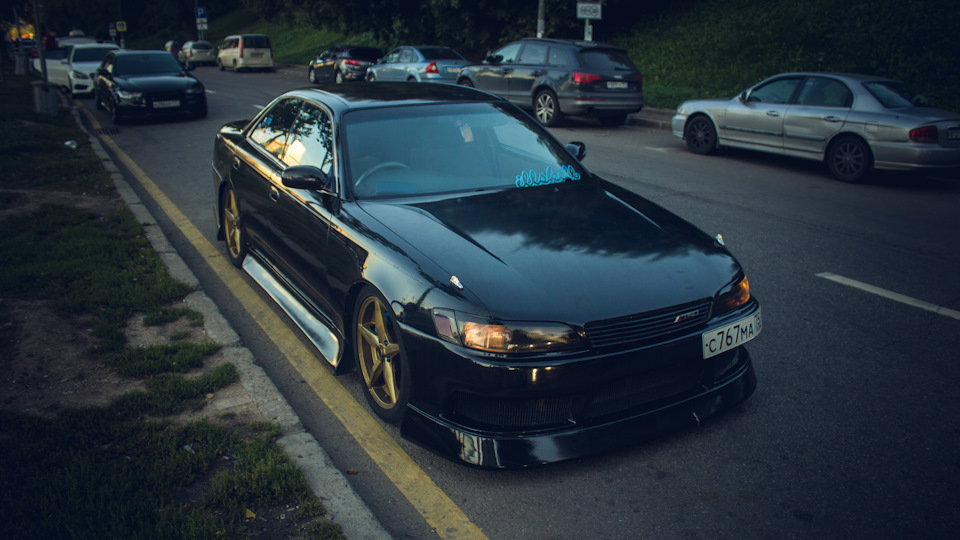
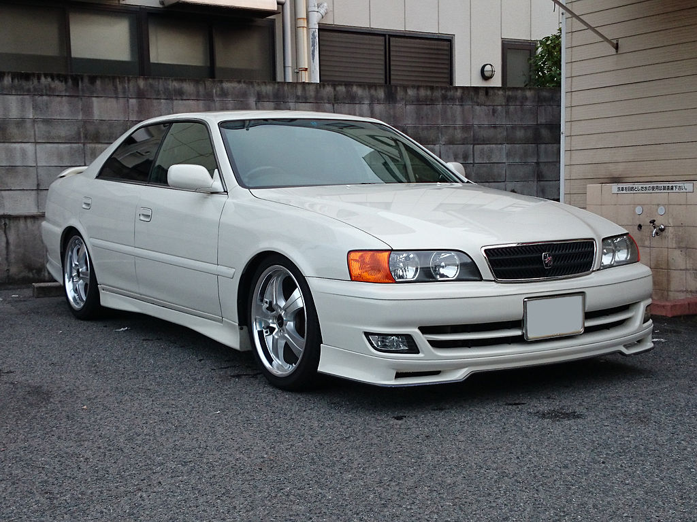

Toyota, управляй мечтой!
Из всех японских производителей автомобилей, Тайота самый крупный. В JDM культуре эта марка имеет огромный вес и влияние. Хочу вам показать самые популярные модели Тойоты у поклонников японского стиля и тюнинга.
Toyota corolla AE86

Ae86 то не просто трехдверный хетчбек. Это легендарная мать дрифта. Очень неоднозначно эту машину показали в аниме Initial D. Сюжет сфокусирован на мире нелегальных японских горных уличных гонок. Основное действие происходит на горных спусках. Простой парень ранним утром помогает отцу с магазином, и с 7 класса доставляет тофу в отель на горе Акина. А по ночам доказывает всем что он быстрейший на спуске. Эта машина на первый взгляд вообще не способна конкурировать с новыми автомобилями. Хотя на самом деле у нее идеальная развесовка по осям и самоблокирующийся дифференциал, что дает довольно неплохую управляемость на поворотах. А на горных дорогах, управляемость намного важнее мощности. Японцы называли АЕ86 «Хачироку» («хачи» и «року» цифры 8 и 6 по-японски).

Toyota Supra A-80, A90
Каждый автомобильный фанат знает купе Toyota Supra. Многие помнят его по первой части фильма "Форсаж". Четвертое поколение этого японского автомобиля выпускали с 1993 по 2002 год. Под капотом может находится 2JZ-GE(атмосферный, 225 л. с.) и 2JZ-GTE (турбо, 280 л. с. для Японии и Европы). Supra появлялась в многочисленных видеоиграх, фильмах, музыкальных клипах и телевизионных шоу. Некоторые из наиболее заметных появлений включают в себя серию фильмов Форсаж и видеоигры Gran Turismo, Forza Motorsport, Need for Speed.  Первое заявление о пятом поколении появилось в 2014 году с концептом нового автомобиля Toyota FT-1, сильно напоминавшим дизайном Toyota Supra А80. Первые реальные прототипы были замечены в 2017 году. Автомобиль разрабатывался совместно с BMW, что очень сильно возмутило фанатов Toyota Supra. Интерьер с BMW Z4 (G29) у новой Supra один, как и сама машина и отличаются технически только кузовом, что очень сильно не понравилось фанатам бренда Toyota. Колесная база новой Supra составляет 2 468 мм. Это автоматически приводит ее в тот же класс, что и Porsche 911 (2 453 мм) и Jaguar F-Type (2 621 мм). Но ее длина в 4 382 мм делает его немного более компактным в целом, что означает более короткие передний и задний свесы, чрезвычайно низкий центр тяжести и идеальное распределение веса 50:50., BMW собирались выпустить новую BMW Z4, а Toyota интересовала Suprа. Новая Toyota Supra оснащается двигателем BMW B58 340 л. с. и 500 Нм (по сравнению с BMW Z4, где имеется 345 л. с. и 505 Нм) и поставляется с восьмиступенчатой автоматической коробкой передач. По оценками Toyota, новая Supra разгоняется до сотни всего за 4,3 секунды, но максимальная скорость ограничена на 250 км/ч. По сравнению с новой Z4 супра имеет более легкий вес и лучшую динамику. 
Toyota Mark II / Chaser tourer v
Toyota Mark II トヨタ・マーク II — четырёхдверный бюджетный среднеразмерный седан, выпускавшийся компанией Toyota с 1968 по 2004 годы. Наименование Mark II использовалось компанией Toyota на протяжении нескольких десятилетий и первоначально использовалось в составе названия Toyota Corona Mark II. Отметка II была введена, чтобы машина выделялась из основной платформы Toyota Corona. Как только в 1970-е годы платформа была разделена, автомобиль стал известен просто как Mark II. В конце 1970-х годов Mark II стал основой для двух седанов — Toyota Cresta и Toyota Chaser, отличающихся от него лишь вариантами исполнения салона и элементами экстерьера. Некоторые поколения седана поставлялись на экспорт с левым расположения руля под маркой Toyota Cressida, ставшей флагманом компании на рынке США на период до появления Toyota Avalon — седана, специально спроектированного для североамериканского рынка.  В мире модификация Tourer V (JZX90 и JZX100) приобрела большую известность среди людей, занимающихся тюнингом, благодаря потенциалу, скрытому в двигателе 1JZ-GTE. Разработкой усовершенствованных вариантов занимается как официальное подразделение компании Toyota — фирма TRD, так и множество независимых частных ателье. Усовершенствованные комплектующие производят такие известные компании как TRD, HKS, Blitz, A’PEXi, Tein и др. В России данная модель получила наибольшее распространение в двух видах автомобильного спорта: заездах на 402 м и скоростном прохождении поворотов в заносе. Также выпускалась модификация Tourer S (X90 и X100), в которой присутствовала подвеска от Tourer V, с двигателем 1JZ-GE объёмом 2,5 литра и с изменённым впрыском топлива. Комплектация Tourer S в кузове Х100 имела до рестайлинга автоматическую коробку с 4 ступенями, после рестайлинга получила модернизированную АКПП . 